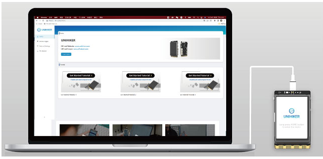
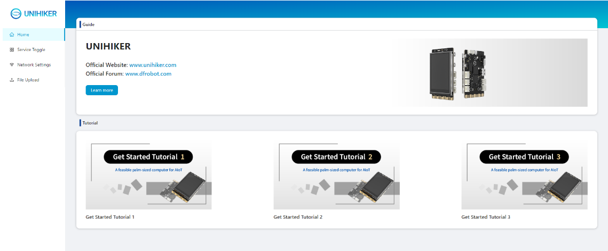
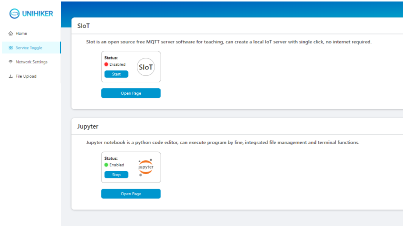
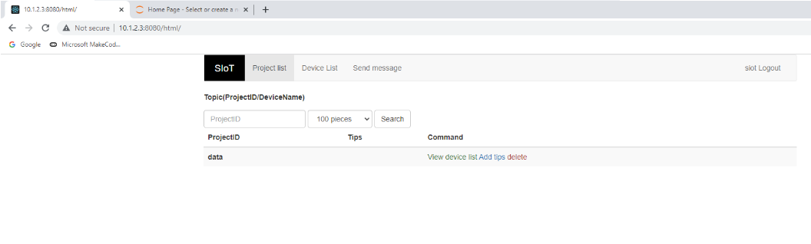
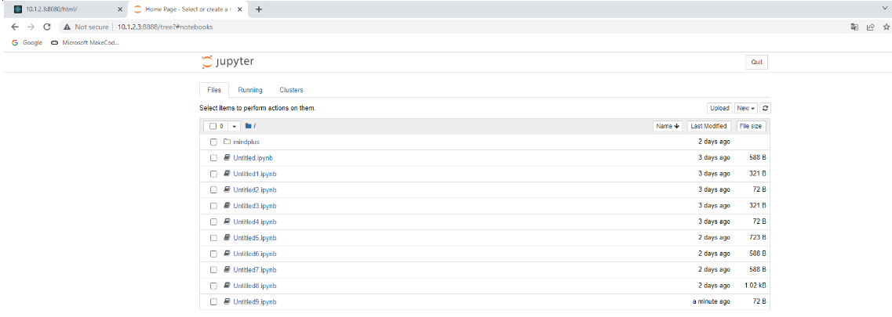
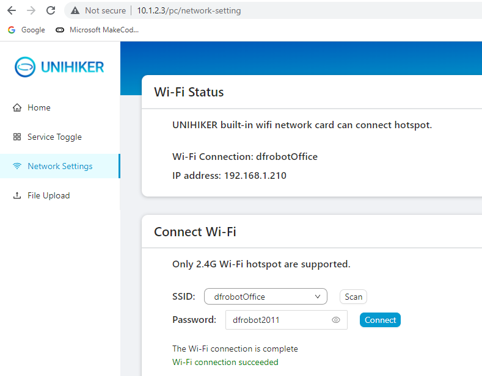
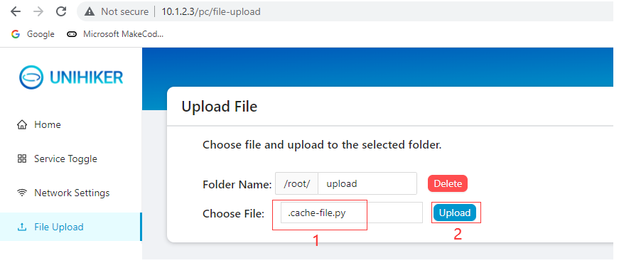

Local Webpage Service¶
The UNIHIKER runs a local web page service, and you can use other devices to directly access the UNIHIKER’s IP address to open this webpage. Make sure that other devices (such as computers, phones, and tablets) are in the same network as the UNIHIKER board (wired, wireless, or hotspot mode), open the browser on the device, enter the UNIHIKER’s IP address, then you can enter this webpage.
When the UNIHIKER is connected to your computer via a USB cable, you can directly open chrome and input the UNIHIKER IP (10.1.2.3) to open the local webpage.
Note: If there is a connection error, check if the USB cable is connected correctly or refer to FAQ for a solution. If the error still exists, join our UNIHIKER channel for assistance.

You will see the webpage interface as shown in the image.
Home Page¶
This page displays tutorials on how to use the UNIHIKER board and provides easy access to the official website, tutorials, and forums to learn about UNIHIKER. 
Service Toggle¶
This page displays the running status of applications with backend management pages such as SIoT and Jupyter. You can turn the services on and off or click on Open Page to enter the corresponding service management page.   
Network Settings¶
When entering the network settings page, the board will automatically scan for WiFi networks in the surrounding area. Select the desired WiFi network from the Name drop-down list and enter the password in the Password input box. Click Connect to connect the UNIHIKER to the WiFi.
Note: If the connection fails, try connecting multiple times or check if the password is entered incorrectly.
Note: Currently, Special symbol WiFi network names are not supported. Please change the WiFi name consisting of letters and numbers. In addition, the hotspot only supports 2.4G WiFi. If there is an option for the mobile hotspot, please turn on 2.4G or turn on compatibility mode.

File Upload¶
This page allows you to upload files from your computer to the UNIHIKER board through the web interface, which is suitable for adapting software that cannot be directly connected to the UNIHIKER via ssh. After selecting the file, click “Upload” to upload the file to the folder with the specified name. If there is a file with the same name, it will be overwritten directly. Deleting a folder will also delete all files within it.
Note: You can only upload a single file here. If you need to download or manage files, we recommend using the SMB Service.